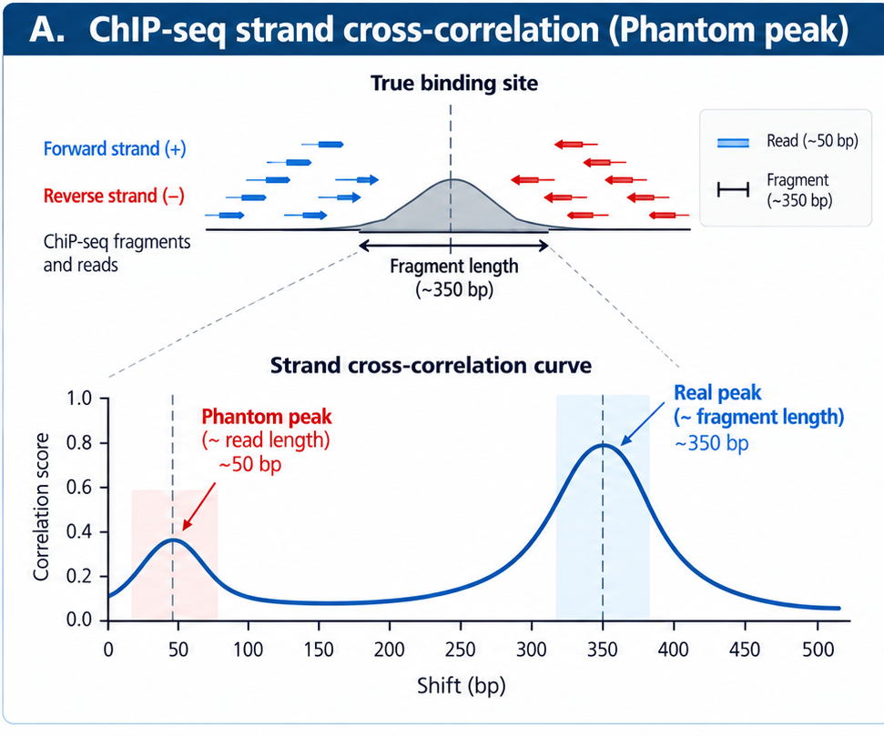
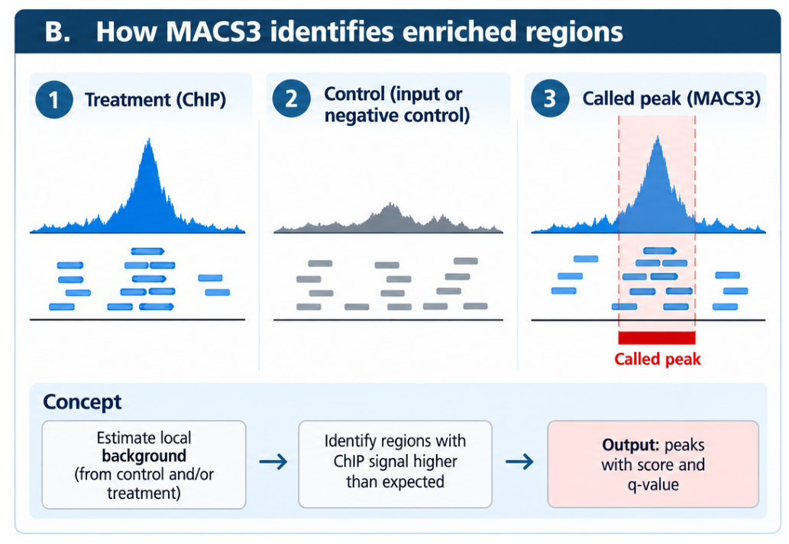

flowchart TD
fastq["Trimmed paired-end ChIP-seq FASTQ"]
mapping["Bowtie2 mapping"]
bam["Sorted + filtered BAM"]
strandqc["Strand cross-correlation QC"]
bigwig["CPM fragment-coverage bigWig tracks"]
macs3["MACS3 peak calling: no input"]
macs3ko["Optional MACS3: WT with Delta negative control"]
idr["IDR: peak reproducibility"]
cor["Replicate signal correlation"]
frip["FRiP: fraction of fragments in peaks"]
peaks["Filter peak q-scores and merge with bedtools"]
counts["Count reads in common peaks"]
pca["PCA of common peak counts"]
deseq2["DESeq2 differential-peak analysis"]
plots["genomation metaplots + heatmaps"]
fasta["Extract peak DNA"]
streme["STREME de novo motifs"]
fastq --> mapping
mapping --> bam
bam --> strandqc
strandqc --> bigwig
bigwig --> macs3
bigwig -.-> macs3ko
macs3 --> idr
idr --> cor
cor --> frip
frip --> peaks
peaks --> counts
counts --> pca
pca --> deseq2
deseq2 --> plots
peaks --> fasta
fasta --> streme
Day 3 - ChIP-seq: mapping, quality control, peaks and motifs
From paired-end reads to interpretable binding regions
1. Before we start
Work from the root of your own workshop_ngs repository:
cd ~/workshop_ngs
pwdThe final component of pwd should be workshop_ngs.
Day 3 starts from the trimmed ChIP-seq FASTQ files created on Day 1:
results/day1_qc/trimmed_fastq/chipseq/Check the FASTQ files, reference genome and Bowtie2 index:
ls -lh results/day1_qc/trimmed_fastq/chipseq/*.trimmed.fastq.gz
ls -lh reference_genome/genome.fa
ls -lh reference_genome/bowtie2_index/genome*.bt2
grep '^>' reference_genome/genome.fa | grep 'NZ_AP026446.1'The same GCF_025998455.1 reference assembly must be used for RNA-seq, ChIP-seq, peak annotation and the optional Day 4 integration.
2. Overview of the day
Today we reuse the mapping logic from Day 2, then introduce ChIP-seq-specific quality control, peak calling, replicate reproducibility and differential occupancy analysis.
The teaching sequence is therefore:
- map and filter reads;
- assess mapped-library quality with strand cross-correlation;
- make fragment-coverage tracks;
- call peaks with MACS3 without input and optionally with matched ΔHP1021 ChIP as a target-negative control;
- perform three complementary post-peak QC checks: IDR, replicate signal correlation and FRiP;
- merge significant peaks into one common peak set;
- count the six selected WT/WTS samples over the same genomic intervals;
- inspect the common count matrix with PCA;
- test differential peak occupancy with DESeq2;
- visualize ChIP-seq signal around peaks;
- extract peak sequences and perform de novo motif discovery with STREME.
This order separates distinct QC questions:
Does one library show the expected strand-shift enrichment structure? -> strand cross-correlation
Are ranked peak calls reproducible between biological replicates? -> IDR
Do replicate genomic signal profiles agree globally? -> replicate correlation
What fraction of usable fragments falls inside called peaks? -> FRiP
Do common peak counts show sensible sample structure? -> PCA
Which common peaks change by condition? -> DESeq2
WarningWorkshop analysis, not a reproduction of the paper
The publication and this workshop do not use the same reference, sample set or statistical workflow. All available ChIP-seq libraries are mapped to GCF_025998455.1. The core exercise calls peaks without an external control and compares only WT and WTS for the downstream occupancy analysis; an additional, separate exercise uses ΔHP1021 ChIP as a target-negative MACS3 control for WT, if the immunoprecipitated target is HP1021. These are teaching analyses, not a reproduction of the published peak coordinates or biological conclusions.
Prepare the folders:
mkdir -p scripts/day3_chipseq
mkdir -p results/day3_chipseq/bam
mkdir -p results/day3_chipseq/qc/phantom_peak
mkdir -p results/day3_chipseq/qc/replicate_correlation
mkdir -p results/day3_chipseq/qc/frip
mkdir -p results/day3_chipseq/qc/peak_counts
mkdir -p results/day3_chipseq/bigwig
mkdir -p results/day3_chipseq/peaks/no_input
mkdir -p results/day3_chipseq/peaks/wt_vs_delta/untreated
mkdir -p results/day3_chipseq/peaks/wt_vs_delta/treated
mkdir -p results/day3_chipseq/peaks/consensus
mkdir -p results/day3_chipseq/idr
mkdir -p results/day3_chipseq/counts
mkdir -p results/day3_chipseq/differential_peaks
mkdir -p results/day3_chipseq/genomation
mkdir -p results/day3_chipseq/motifs/streme
mkdir -p results/logs/day33. Map and filter the ChIP-seq reads
ChIP-seq reads come from genomic DNA fragments recovered by immunoprecipitation. Mapping asks where those fragments originate on the reference genome.
We use Bowtie2 to align the paired-end reads and SAMtools to convert, sort, filter and index the alignments. These are the same basic alignment objects introduced on Day 2.
The transformation is:
paired FASTQ
-> Bowtie2 alignments
-> temporary SAM
-> coordinate-sorted BAM
-> filtered BAM
-> BAM index and mapping summariesThe sorted BAM preserves the complete mapped library. The filtered BAM is the working file for ChIP-seq QC, coverage tracks, peak calling and peak counting.
3.1 Mapping and filtering script
Create scripts/day3_chipseq/01_map_bowtie2_sort_filter.sh:
nano scripts/day3_chipseq/01_map_bowtie2_sort_filter.shPaste:
#!/usr/bin/env bash
set -euo pipefail
fastq_dir="results/day1_qc/trimmed_fastq/chipseq"
index_prefix="reference_genome/bowtie2_index/genome"
bam_dir="results/day3_chipseq/bam"
log_dir="results/logs/day3"
mkdir -p "${bam_dir}" "${log_dir}"
for read1 in "${fastq_dir}"/*_R1.trimmed.fastq.gz
do
read2="${read1/_R1.trimmed.fastq.gz/_R2.trimmed.fastq.gz}"
sample_id="$(basename "${read1}" _R1.trimmed.fastq.gz)"
sam_file="${bam_dir}/${sample_id}.sam"
sorted_bam="${bam_dir}/${sample_id}.sorted.bam"
filtered_bam="${bam_dir}/${sample_id}.filtered.bam"
bowtie2 \
-x "${index_prefix}" \
-1 "${read1}" \
-2 "${read2}" \
-p 2 \
-S "${sam_file}" \
2> "${log_dir}/${sample_id}.bowtie2.log"
samtools sort \
-@ 2 \
-O BAM \
-o "${sorted_bam}" \
"${sam_file}"
samtools index "${sorted_bam}"
samtools flagstat "${sorted_bam}" > "${log_dir}/${sample_id}.flagstat.txt"
samtools view \
-@ 2 \
-b \
-q 10 \
-f 2 \
-F 2828 \
-o "${filtered_bam}" \
"${sorted_bam}"
samtools index "${filtered_bam}"
samtools flagstat "${filtered_bam}" > "${log_dir}/${sample_id}.filtered.flagstat.txt"
rm -f "${sam_file}"
doneRun it:
docker run --rm \
--user "$(id -u):$(id -g)" \
-v "$PWD:/work" \
-w /work \
docker.io/fgualdr/ngs-bowtie2-samtools \
bash scripts/day3_chipseq/01_map_bowtie2_sort_filter.shCheck:
ls -lh results/day3_chipseq/bam/*.sorted.bam
ls -lh results/day3_chipseq/bam/*.filtered.bam
cat results/logs/day3/*.bowtie2.log
cat results/logs/day3/*.filtered.flagstat.txt3.2 What the filter means
The key command is:
samtools view -b -q 10 -f 2 -F 2828| Option | Meaning here |
|---|---|
-b |
write BAM output |
-q 10 |
require mapping quality of at least 10 |
-f 2 |
retain alignments belonging to properly paired fragments |
-F 2828 |
remove unmapped, mate-unmapped, secondary, failed-QC and supplementary records |
samtools sort accepts SAM directly and writes coordinate-sorted BAM; -O BAM simply makes the output format explicit. The -b option belongs to samtools view, not to samtools sort.
Duplicates are retained in this workshop. A pileup of identical coordinates may reflect PCR amplification, but a strong narrow binding event can also generate repeated fragment coordinates. A research analysis should decide how to handle duplicates after inspecting library complexity and peak behaviour rather than applying one rule mechanically.
4. Quality control of mapped ChIP-seq libraries
ChIP-seq QC is not one number. We combine several pieces of evidence:
| Question | Evidence |
|---|---|
| Did the reads map to the intended reference? | Bowtie2 log and samtools flagstat |
| Are the paired fragments plausible? | proper-pair rate and fragment-size summaries |
| Does the library contain strand-shift enrichment structure? | strand cross-correlation |
| Is enrichment visible as genomic signal? | CPM bigWig tracks |
| Do biological replicates reproduce peak calls? | IDR after peak calling |
| Do replicate signal profiles agree genome-wide? | deepTools replicate correlation after peak calling |
| Is ChIP signal concentrated in called peaks? | FRiP after peak calling |
4.1 Strand cross-correlation: the idea
For a narrow ChIP-seq binding event, DNA fragments overlap the bound locus. The 5′ ends of reads mapping to the + strand tend to accumulate on one side of the event, while reads mapping to the - strand tend to accumulate on the other side.
Strand cross-correlation asks how similar those two strand-specific read-start profiles become when one profile is shifted relative to the other:
- keep the
+-strand profile fixed; - shift the
--strand profile by increasing distances; - calculate the correlation at each shift;
- inspect where the correlation reaches local maxima.

Two positions on the curve are particularly useful:
- the phantom peak, usually close to the sequencing read length;
- the fragment-length peak, near the characteristic separation of the two sides of enriched ChIP fragments.
For example, with 50 bp reads from a library whose sonicated fragments are around 350 bp, the phantom peak is expected near 50 bp and the enrichment-associated fragment peak near 350 bp.
A library with clear enrichment usually shows a fragment-length peak that rises above the read-length phantom structure. This is a QC pattern, not an absolute biological rule: low-complexity experiments or proteins with very few genuine binding sites can also produce modest cross-correlation values.
The commonly reported quantities are:
| Quantity | Interpretation |
|---|---|
estFragLen |
shift of the strongest non-phantom cross-correlation peak |
phantomPeak |
read-length-associated peak position |
NSC |
correlation at the fragment peak divided by the minimum cross-correlation |
RSC |
fragment-peak enrichment above the minimum, relative to the phantom-peak enrichment above the minimum |
QualityTag |
thresholded summary derived from RSC; useful as a warning flag, not as the complete QC decision |
NotePaired-end interpretation
For paired-end data, the physical fragment boundaries are already defined by the two mates. MACS3 BAMPE therefore does not need the cross-correlation estimate in order to reconstruct fragment length. We use strand cross-correlation as an independent measure of enrichment structure and library quality.
4.2 phantompeakqualtools
We calculate strand cross-correlation with phantompeakqualtools, the Kundaje Lab implementation widely used in ENCODE-style ChIP-seq QC. The tool is built around the SPP strand cross-correlation framework described by Kharchenko, Tolstorukov and Park (2008) and the ENCODE ChIP-seq QC recommendations of Landt et al. (2012).
Its main script, run_spp.R, reads mapped tags, constructs strand-specific read-start profiles, evaluates their cross-correlation over a range of shifts and reports the fragment peak, phantom peak, NSC, RSC and quality tag. With -savp it also writes a PDF cross-correlation curve for visual inspection.
The original method was developed around tag/read starts. For our paired-end data, the directly observed mate-to-mate fragment length remains the physical fragment definition; we use cross-correlation as an independent enrichment-structure QC measurement. We use only the QC functionality of phantompeakqualtools; peak calling in this workshop is performed with MACS3.
Create scripts/day3_chipseq/02_phantom_peak_qc.sh:
nano scripts/day3_chipseq/02_phantom_peak_qc.shPaste:
#!/usr/bin/env bash
set -euo pipefail
bam_dir="results/day3_chipseq/bam"
out_dir="results/day3_chipseq/qc/phantom_peak"
log_dir="results/logs/day3"
work_dir="$PWD"
summary_file="${out_dir}/phantom_peak_summary.tsv"
mkdir -p "${out_dir}" "${log_dir}"
printf 'filename\tnumReads\testFragLen\tcorr_estFragLen\tphantomPeak\tcorr_phantomPeak\targmin_corr\tmin_corr\tNSC\tRSC\tQualityTag\n' > "${summary_file}"
for bam in "${bam_dir}"/*.filtered.bam
do
sample_id="$(basename "${bam}" .filtered.bam)"
sample_dir="${out_dir}/${sample_id}"
qc_file="${sample_dir}/${sample_id}.phantom_peak_qc.tsv"
mkdir -p "${sample_dir}"
rm -f "${qc_file}"
Rscript "$(command -v run_spp.R)" \
-c="${work_dir}/${bam}" \
-p=2 \
-savp \
-rf \
-odir="${work_dir}/${sample_dir}" \
-tmpdir="${work_dir}/${sample_dir}" \
-out="${work_dir}/${qc_file}" \
> "${log_dir}/${sample_id}.phantom_peak.log" 2>&1
cat "${qc_file}" >> "${summary_file}"
doneRun:
docker run --rm \
--user "$(id -u):$(id -g)" \
--platform linux/amd64 \
-v "$PWD:/work" \
-w /work \
quay.io/biocontainers/phantompeakqualtools:1.2.2--hdfd78af_1 \
bash scripts/day3_chipseq/02_phantom_peak_qc.shInspect the summary and the PDF curves:
column -t -s $'\t' results/day3_chipseq/qc/phantom_peak/phantom_peak_summary.tsv
find results/day3_chipseq/qc/phantom_peak -name '*.pdf' | sortInterpret the cross-correlation curve together with mapping rate, read depth, replicate behaviour, bigWig signal and later peak calls rather than using a single historical threshold as a pass/fail rule.
4.3 Make CPM-normalized fragment coverage with bamCoverage
bamCoverage from deepTools converts BAM alignments into an indexed bigWig signal track.
For paired-end ChIP-seq we want fragment coverage rather than two independent read tracks:
--extendReadsuses the mate positions to represent the complete paired-end fragment;--samFlagInclude 64keeps only read 1 as the representative BAM record, so that the same physical fragment is not added twice;--normalizeUsing CPMscales the track by the number of mapped observations used to generate the signal.
Create scripts/day3_chipseq/03_make_cpm_bigwigs.sh:
nano scripts/day3_chipseq/03_make_cpm_bigwigs.shPaste:
#!/usr/bin/env bash
set -euo pipefail
bam_dir="results/day3_chipseq/bam"
out_dir="results/day3_chipseq/bigwig"
mkdir -p "${out_dir}"
for bam in "${bam_dir}"/*.filtered.bam
do
sample_id="$(basename "${bam}" .filtered.bam)"
bamCoverage \
-b "${bam}" \
-o "${out_dir}/${sample_id}.cpm.bw" \
--normalizeUsing CPM \
--binSize 10 \
--extendReads \
--samFlagInclude 64 \
--numberOfProcessors 2
doneRun:
docker run --rm \
--user "$(id -u):$(id -g)" \
-v "$PWD:/work" \
-w /work \
docker.io/fgualdr/ngs-deeptools \
bash scripts/day3_chipseq/03_make_cpm_bigwigs.shCheck:
ls -lh results/day3_chipseq/bigwig/*.cpm.bwOpen the tracks in IGV and compare the same loci across all replicates. Look for localized enrichment, agreement between replicates and samples that are unusually flat or noisy.
5. Call peaks with MACS3
Peak calling converts a continuous ChIP-seq enrichment signal into genomic intervals whose signal is unlikely to be explained by the estimated background alone.
We use MACS3 callpeak, the current implementation of the MACS peak-calling framework.

5.1 From a paired-end BAM to a peak
For paired-end ChIP-seq, MACS3 can be understood as four linked operations:
- Build the observed ChIP signal. With
-f BAMPE, each properly mapped read pair already defines the physical DNA fragment. MACS3 piles up those observed fragments across the genome to obtain the treatment signal, \(k(x)\). - Build an expected background. MACS3 calculates an expected count, \(\lambda(x)\), representing how much signal could plausibly occur without specific enrichment. The source of this background depends on whether a control is supplied; this is explained in Section 5.2.
- Score enrichment across the genome. At each genomic position, the observed treatment pileup is compared with the expected background using a local Poisson model. This produces a genome-wide p-value score track, which MACS3 converts to q-values when peak calling is performed with
-q. - Turn the score track into genomic intervals. MACS3 keeps regions above the selected score threshold, merges nearby significant segments when the intervening gap is sufficiently short, rejects regions shorter than the minimum peak length, and reports the resulting intervals as peaks. With
--call-summits, local maxima inside those intervals are also reported.
paired-end BAM
|
v
observed fragments -> treatment pileup k(x)
|
+-----------------------------+
|
background model -> lambda(x) |
| |
+---------- compare ----------+
|
v
Poisson p-value track
|
v
q-values
|
v
threshold + join nearby regions
|
v
peak start -- summit -- peak end
|
v
narrowPeak
ImportantMACS3 isliding
The fragment length contributes to the treatment/background model and, by default, to the minimum allowed peak length. Peak boundaries come from contiguous parts of the statistical score track that pass the selected cutoff. The default maximum gap used to join nearby significant segments is based on the detected read length, whereas the default minimum peak length is based on \(d\).
What happens to the MACS shifting model with paired-end data?
The original MACS model was designed for single-end ChIP-seq. Plus- and minus-strand read starts form two displaced clouds around a binding event like the Phantompeak QC step!, and MACS estimates their separation to infer the fragment length and shift the tags appropriately.
With -f BAMPE, that inference is unnecessary for the treatment pileup: the two mates already define the complete fragment. MACS3 therefore enters its paired-end mode and uses the actual insert sizes of read pairs rather than building the single-end bimodal shifting model.
Note
--nomodel is not the same as --nolambda
--nomodel tells MACS3 to bypass the single-end shifting model and normally goes together with a user-specified --extsize (and, when appropriate, --shift). It is mainly relevant when analysing reads as single-end tags.
For this workshop we use -f BAMPE, so the paired-end fragment coordinates are already known and adding --nomodel is unnecessary.
--nolambda, discussed below, is completely different: it changes how MACS3 estimates the background used for the Poisson test.
MACS3 derives q-values from the genome-wide p-value distribution using the Benjamini-Hochberg procedure. The final narrowPeak interval is therefore a model-derived enriched region, not a directly observed object.
5.2 Where does the background lambda come from?
The central statistical comparison is between the observed treatment pileup, \(k(x)\), and an expected background, \(\lambda(x)\):
\[ X \sim Poisson(\lambda(x)) \]
MACS3 asks how surprising the observed pileup is under that background model. A large treatment pileup relative to \(\lambda(x)\) produces a small p-value.
The important point is that the source of \(\lambda\) changes depending on whether an external control is supplied.
Case 1: a control is supplied with -c
With an input, mock-IP or other control library, the treatment and control have different roles:
ChIP BAM ------------------------------> observed pileup k(x)
Control BAM
|-- whole-genome background lambda_BG
|-- fragment-scale background lambda_d
|-- 1 kb local background lambda_slocal
`-- 10 kb local background lambda_llocal
|
v
lambda_local(x)The genome-wide component is approximately:
\[ \lambda_{BG} = \frac{N_{control}\,d}{G_{effective}} \]
where \(N_{control}\) is the number of usable control reads/fragments, \(d\) is the characteristic fragment length and \(G_{effective}\) is the effective genome size.
MACS3 then estimates control-derived background at several spatial scales. By default these are approximately:
- fragment scale, \(\lambda_d\);
- small local window, \(\lambda_{slocal}\), controlled by
--slocal, default 1000 bp; - large local window, \(\lambda_{llocal}\), controlled by
--llocal, default 10000 bp; - the genome-wide baseline, \(\lambda_{BG}\).
At each genomic position, the standard local background is the most conservative of these estimates:
\[ \lambda_{local}(x) = \max\left(\lambda_{BG},\lambda_d(x),\lambda_{slocal}(x),\lambda_{llocal}(x)\right) \]
The 1 kb and 10 kb windows therefore estimate background around a genomic position. They are not the windows that define the final peak boundaries.
Before treatment and control are compared, MACS3 puts the two libraries on a comparable sequencing-depth scale. By default (--scale-to small), the larger library is scaled down to the depth of the smaller library.
NotePaired-end treatment versus control background
With -f BAMPE, MACS3 uses the observed paired-end fragments directly for the treatment pileup. The average insertion length \(d\) is still used when constructing the expected background scale. This distinction is one reason why \(d\) remains relevant even though paired-end fragments themselves do not need to be inferred from strand shifts.
Case 2: no control is supplied
Without -c, there is no independent negative library. MACS3 can still call peaks by deriving the background from the treatment library itself:
ChIP BAM
|-------------------------------> observed pileup k(x)
|
`-- also provides information for the background modelThe approximate genome-wide component now comes from the treatment depth:
\[ \lambda_{BG} = \frac{N_{ChIP}\,d}{G_{effective}} \]
If local-lambda modelling is left enabled, MACS3 can also derive local bias from the treatment data. This is mathematically possible, but it is not equivalent to having an independent control: the same library contains both the biological enrichment that we are trying to detect and the information being used to estimate local background.
Why MACS3 recommends --nolambda when no control is available
The current MACS3 documentation notes that --nolambda is particularly recommended when calling peaks without a control sample. With this option, MACS3 does not use the local 1 kb / 10 kb / fragment-scale bias around candidate peaks. Instead, it uses the background lambda as the local lambda:
\[ \lambda_{local}(x) = \lambda_{BG} \]
Conceptually:
NO CONTROL, local lambda enabled
ChIP -> treatment pileup
`--> treatment-derived local background
NO CONTROL + --nolambda
ChIP -> treatment pileup
`--> genome-wide background lambda_BGThis avoids allowing a strong treatment enrichment to contribute to a local background estimate around the same candidate peak. The trade-off is that without a control MACS3 cannot model locus-specific experimental biases that an independent input or negative-control library could reveal.
ImportantWorkshop choice
For the primary no-input analysis in Section 5.4, we do not supply an external -c control, so we use --nolambda. The statistical comparison in that route is therefore:
observed ChIP pileup k(x)
versus
genome-wide background lambda_BGThis is a transparent no-control teaching analysis, but it is not equivalent to a control-based ChIP-seq experiment. Peak interpretation therefore relies heavily on replicate reproducibility, signal correlation, FRiP, bigWig inspection and biological validation.
The detailed behaviour of these options is described in the MACS3 callpeak documentation and its step-by-step peak-calling explanation.
5.3 Where an input or negative control belongs
A control is supplied at the MACS3 peak-calling step with -c, but choosing the control is first an experimental-design decision: which sources of background do we want the control to represent?
| Design | What it contributes | Important limitation |
|---|---|---|
| matched input DNA | fragmentation, mappability, copy-number and general sequencing background before immunoprecipitation | it does not pass through antibody binding, beads, washes or immunoprecipitation |
| mock-IP or IgG ChIP | background generated by the immunoprecipitation procedure | a different antibody can have different affinity and nonspecific-binding behaviour |
| target-negative ChIP, such as an isogenic knockout or deletion | the same antibody and ChIP procedure in material lacking the intended target | deleting the target can alter physiology, chromatin or DNA accessibility |
| no external control | MACS3 can derive background from the treatment; in this workshop --nolambda restricts this to the genome-wide background \(\lambda_{BG}\) |
no locus-specific experimental background is measured, and antibody/IP-specific artefacts are not represented |
Equal read depth does not mean equal background information
Input and ChIP libraries are often sequenced to a similar total depth, but they contain very different fragment distributions:
input DNA = fragments distributed broadly across the genome
ChIP DNA = fragments concentrated at enriched lociAn input with the same number of mapped fragments as the ChIP library can therefore still be relatively sparse at any particular locus. MACS3 can scale treatment and control libraries to comparable effective depths, but scaling cannot create local observations that were never sequenced. A shallow input can consequently become the limiting library; the presence of an input file does not automatically guarantee a better local background estimate.
This does not make input useless. A sufficiently informative input is valuable for pre-IP biases such as uneven fragmentation, mappability and copy-number effects. The point is that input depth should be chosen for the background it must estimate, rather than automatically matched one-for-one to the IP depth.
Input-free calling is not background-free calling
When no external control is supplied, peak calling still requires a null/background expectation. In our workshop that expectation is the treatment-depth-derived genome-wide \(\lambda_{BG}\) because --nolambda disables the additional treatment-derived local-bias terms. Independent QC therefore becomes especially important:
- mapping quality and library complexity;
- strand cross-correlation;
- pairwise peak reproducibility with IDR;
- replicate signal correlation across genomic bins;
- fraction of usable fragments in called peaks (FRiP);
- sample-level structure of the common peak-count matrix;
- bigWig peak shape and signal-to-noise;
- recovery of plausible sequence motifs;
- consistency with the biological experiment.
NoteFG personal point of view
For a target-specific ChIP experiment, a well-matched target-negative ChIP can be more informative than input DNA for distinguishing genuine target-dependent enrichment from antibody- and IP-dependent background, because it passes through the complete immunoprecipitation procedure.
The publication used ΔHP1021 material as a target-negative ChIP control for confirmatory analysis. This is not the same as input DNA, and it is not a perfect control: deleting the target can change the biological state. In a complete experiment, input and target-negative ChIP can be complementary.
The workshop retains this exploratory no-input analysis for the core workflow. Section 5.5 adds a separate, optional WT-versus-ΔHP1021 negative-control peak-calling route. The two sets of calls should be interpreted with cross-correlation, replicate agreement, bigWig shape, motif evidence and biological context rather than treated as interchangeable.
5.4 Run MACS3 on each sample
Create scripts/day3_chipseq/04_call_peaks_macs3.sh:
nano scripts/day3_chipseq/04_call_peaks_macs3.shPaste:
#!/usr/bin/env bash
set -euo pipefail
bam_dir="results/day3_chipseq/bam"
peak_dir="results/day3_chipseq/peaks/no_input"
log_dir="results/logs/day3"
genome_size="1696601"
mkdir -p "${peak_dir}" "${log_dir}"
for bam in "${bam_dir}"/*.filtered.bam
do
sample_id="$(basename "${bam}" .filtered.bam)"
macs3 callpeak \
-t "${bam}" \
-f BAMPE \
-g "${genome_size}" \
-n "${sample_id}" \
--outdir "${peak_dir}" \
--keep-dup all \
--call-summits \
--nolambda \
> "${log_dir}/${sample_id}.macs3.log" 2>&1
doneRun:
docker run --rm \
--user "$(id -u):$(id -g)" \
-v "$PWD:/work" \
-w /work \
docker.io/fgualdr/ngs-macs3 \
bash scripts/day3_chipseq/04_call_peaks_macs3.shCheck the peak calls:
wc -l results/day3_chipseq/peaks/no_input/*_peaks.narrowPeakThis no-input route makes one MACS3 call per sample. Its WT and WTS narrowPeak files are reused for the default downstream merging, FRiP and IDR exercises. We do not specify -q or -p, so MACS3 uses its default significance threshold. We retain --nolambda here because no external -c control is supplied. The separate control-based calls below do not use --nolambda.
5.5 Additional MACS3 calling: WT versus ΔHP1021 negative control
The S suffix denotes the S-treated experimental condition, not an input or negative control. We therefore keep untreated and S-treated libraries separate. If these are HP1021 ChIP-seq experiments and ΔHP1021 is the isogenic strain lacking the immunoprecipitated HP1021 target, the ΔHP1021 ChIP libraries can serve as target-negative immunoprecipitation controls for WT peak calling.
WT ChIP (-t) |
ΔHP1021 ChIP (-c) |
Experimental condition |
|---|---|---|
WT_1.filtered.bam |
ΔHP1021_1.filtered.bam |
untreated, replicate 1 |
WT_2.filtered.bam |
ΔHP1021_2.filtered.bam |
untreated, replicate 2 |
WT_3.filtered.bam |
ΔHP1021_3.filtered.bam |
untreated, replicate 3 |
WTS_1.filtered.bam |
ΔHP1021S_1.filtered.bam |
S-treated, replicate 1 |
WTS_2.filtered.bam |
ΔHP1021S_2.filtered.bam |
S-treated, replicate 2 |
WTS_3.filtered.bam |
ΔHP1021S_3.filtered.bam |
S-treated, replicate 3 |
ImportantA knockout control is not a genotype differential-binding test
Use -c ΔHP1021 only if the deletion strain truly lacks the ChIP target, and the IP and treatment protocols are otherwise comparable. The contrast then asks where the WT ChIP signal exceeds a target-negative ChIP background. It does not provide a statistical test of differential occupancy between the genotypes. If the ChIP target is a different protein or a histone modification, analyse WT and ΔHP1021 as biological conditions using an appropriate input/mock-IP background and a replicate-aware differential analysis instead.
Here, replicate numbers are used to select corresponding files; they do not imply a paired experimental design unless the samples were collected as matched pairs. If controls are independent, a pooled negative-control design is another defensible approach to consider for a research pipeline.
Create scripts/day3_chipseq/04b_call_peaks_macs3_wt_vs_delta.sh:
nano scripts/day3_chipseq/04b_call_peaks_macs3_wt_vs_delta.shPaste:
#!/usr/bin/env bash
set -euo pipefail
bam_dir="results/day3_chipseq/bam"
out_dir="results/day3_chipseq/peaks/wt_vs_delta"
log_dir="results/logs/day3"
genome_size="1696601"
mkdir -p "${out_dir}/untreated" "${out_dir}/treated" "${log_dir}"
for condition in untreated treated; do
if [[ "${condition}" == "untreated" ]]; then
wt_prefix="WT"
delta_prefix="ΔHP1021"
else
wt_prefix="WTS"
delta_prefix="ΔHP1021S"
fi
for rep in 1 2 3; do
wt_bam="${bam_dir}/${wt_prefix}_${rep}.filtered.bam"
delta_bam="${bam_dir}/${delta_prefix}_${rep}.filtered.bam"
sample_id="WT_vs_Delta_${condition}_rep${rep}"
for bam in "${wt_bam}" "${delta_bam}"; do
if [[ ! -s "${bam}" ]]; then
echo "ERROR: Missing or empty BAM: ${bam}" >&2
exit 1
fi
done
echo "Calling ${sample_id}: ${wt_bam} vs ${delta_bam}"
macs3 callpeak \
-t "${wt_bam}" \
-c "${delta_bam}" \
-f BAMPE \
-g "${genome_size}" \
-n "${sample_id}" \
--outdir "${out_dir}/${condition}" \
--keep-dup all \
--call-summits \
> "${log_dir}/${sample_id}.macs3.log" 2>&1
echo "Completed ${sample_id}"
done
doneRun using the same MACS3 container as in Section 5.4:
docker run --rm \
--user "$(id -u):$(id -g)" \
-v "$PWD:/work" \
-w /work \
docker.io/fgualdr/ngs-macs3 \
bash scripts/day3_chipseq/04b_call_peaks_macs3_wt_vs_delta.shInspect the six new peak lists:
wc -l results/day3_chipseq/peaks/wt_vs_delta/untreated/*_peaks.narrowPeak
wc -l results/day3_chipseq/peaks/wt_vs_delta/treated/*_peaks.narrowPeak
ls -lh results/logs/day3/WT_vs_Delta_*.macs3.logExpected primary outputs (plus MACS3 supplementary files):
results/day3_chipseq/peaks/wt_vs_delta/
├── untreated/
│ ├── WT_vs_Delta_untreated_rep1_peaks.narrowPeak
│ ├── WT_vs_Delta_untreated_rep2_peaks.narrowPeak
│ └── WT_vs_Delta_untreated_rep3_peaks.narrowPeak
└── treated/
├── WT_vs_Delta_treated_rep1_peaks.narrowPeak
├── WT_vs_Delta_treated_rep2_peaks.narrowPeak
└── WT_vs_Delta_treated_rep3_peaks.narrowPeakUnlike the no-input command, this call supplies -c and does not include --nolambda. MACS3 can therefore use the ΔHP1021 control signal to estimate locus-dependent background. The existing -f BAMPE, --keep-dup all and --call-summits settings are preserved.
Interpretation exercise: For each WT replicate, compare the number and positions of peaks called without a control (Section 5.4) and with the target-negative control (this section). Does subtracting genotype-matched nonspecific ChIP signal remove questionable peaks while retaining reproducible HP1021-associated enrichment?
NoteIndependent branch: downstream scripts are unchanged unless you select this peak set
The IDR and FRiP scripts in Section 6 and the core count-matrix construction in Section 7 continue to read peaks/no_input/ by default. This new branch writes to peaks/wt_vs_delta/ and does not overwrite those peak calls. To pursue controlled peak sets through IDR or quantitative counting, explicitly adapt the peak file paths and document the resulting analysis as a distinct run. Do not mix the two peak-calling strategies in a single consensus set without a stated reason.
5.6 Read a MACS3 narrowPeak file
MACS3 writes narrowPeak as BED6+4. The first three columns define the genomic interval; the remaining columns describe enrichment and the summit.
| Column | MACS3 meaning |
|---|---|
| 1–3 | chromosome, 0-based start, half-open end |
| 4 | peak name |
| 5 | display score derived from the selected p/q score |
| 6 | strand, usually . |
| 7 | fold-enrichment at the peak summit |
| 8 | -log10(p-value) at the summit |
| 9 | -log10(q-value) at the summit |
| 10 | summit offset from the peak start |
The peaks/no_input/ files remain the peak lists used for the default IDR, FRiP, construction of the common peak universe and downstream counting. The additional peaks/wt_vs_delta/ files are a separate control-based comparison. Neither MACS3 route sets -q or -p, so both use the MACS3 default peak-calling significance threshold.
A called interval is a model-derived result, not a directly observed object. Important peaks should still be compared with the CPM bigWigs and replicate behaviour.
6. Post-peak quality control
Once MACS3 has produced peak calls, we pause before building the differential-analysis matrix. Three complementary QC measurements answer different questions:
| QC | Main question | Data object |
|---|---|---|
| IDR | are the ranked peak calls reproducible between biological replicates? | MACS3 narrowPeak lists |
| replicate signal correlation | do replicates have similar ChIP-seq signal across the genome? | filtered BAM signal summarized in genomic bins |
| FRiP | what fraction of usable paired-end fragments falls inside that sample’s called peaks? | filtered BAM + that sample’s MACS3 peak set |
These metrics are related but not interchangeable. A sample can have a good FRiP yet disagree with its replicate about where the strongest peaks occur, or two replicates can correlate globally while differing in the weakest peak calls.
NoteTwo different uses of the word correlation
The strand cross-correlation in Section 4 is calculated within one library by shifting the +- and --strand read-start profiles. The replicate signal correlation below compares genomic signal between samples. They answer different QC questions.
6.1 IDR: reproducibility of ranked peak calls
After peak calling, one key question is whether biological replicates recover a consistent ranked set of enriched regions. We use Irreproducible Discovery Rate (IDR) as the formal replicate-level peak reproducibility framework.
A simple first check is the number of peaks called in each sample:
wc -l results/day3_chipseq/peaks/no_input/*_peaks.narrowPeakPeak counts alone are not enough: two samples can contain similar numbers of peaks but disagree strongly about which regions are strongest. IDR therefore uses the relative ranking of matched peaks between two replicate peak lists.
IDR concept
We use the idr implementation distributed through Bioconda/Biocontainers:
quay.io/biocontainers/idr:2.0.4.2--py39h031d066_12The statistical framework was introduced by Li, Brown, Huang and Bickel (2011), Measuring reproducibility of high-throughput experiments.
An interval overlap asks only:
Do two peak intervals intersect?
IDR asks a stronger question:
After matching peaks between replicates, are strong peaks strong in both replicates, and where does that rank agreement begin to break down?
Conceptually, IDR does four things:
- matches overlapping peaks between the two replicate lists;
- ranks the matched peaks using a chosen peak score;
- fits a two-component model containing a reproducible and an irreproducible component;
- assigns local and global measures of irreproducibility.
A useful interpretation is:
local IDR ~ probability that one matched peak pair belongs to the irreproducible component
global IDR ~ cumulative irreproducibility among peaks at least this reproducibleIDR is therefore a rank-reproducibility analysis, not a differential-binding test and not simply an overlap percentage.
In this workshop we rank the MACS3 narrowPeak lists by p.value and use a global IDR threshold of 0.05. For narrowPeak, p.value refers to the -log10(p-value) score in column 8.
ImportantWhat is simplified here?
A formal production IDR workflow is usually built from long, relaxed or near-unthresholded ranked peak lists so that the model can see both the reproducible signal and the weaker tail. To keep this workshop linear, we deliberately reuse the same MACS3 peak list produced by the single callpeak command.
This is sufficient to teach pairwise rank reproducibility, but it can make IDR less informative if the MACS3 output contains only strong peaks. We also stop short of a full ENCODE-style IDR workflow: we do not add pooled-replicate or pseudo-replicate analyses.
Run pairwise IDR
We compare the three biological replicates within each condition:
WT_1 vs WT_2
WT_1 vs WT_3
WT_2 vs WT_3
WTS_1 vs WTS_2
WTS_1 vs WTS_3
WTS_2 vs WTS_3Create scripts/day3_chipseq/05_idr_pairwise_qc.sh:
nano scripts/day3_chipseq/05_idr_pairwise_qc.shPaste:
#!/usr/bin/env bash
set -euo pipefail
peak_dir="results/day3_chipseq/peaks/no_input"
out_dir="results/day3_chipseq/idr"
log_dir="results/logs/day3"
mkdir -p "${out_dir}" "${log_dir}"
pairs=(
"WT_1:WT_2"
"WT_1:WT_3"
"WT_2:WT_3"
"WTS_1:WTS_2"
"WTS_1:WTS_3"
"WTS_2:WTS_3"
)
for pair in "${pairs[@]}"
do
sample1="${pair%%:*}"
sample2="${pair##*:}"
prefix="${sample1}_vs_${sample2}"
idr \
--samples \
"${peak_dir}/${sample1}_peaks.narrowPeak" \
"${peak_dir}/${sample2}_peaks.narrowPeak" \
--input-file-type narrowPeak \
--rank p.value \
--idr-threshold 0.05 \
--use-best-multisummit-IDR \
--plot \
--output-file "${out_dir}/${prefix}.idr.narrowPeak" \
--log-output-file "${log_dir}/${prefix}.idr.log"
doneRun:
docker run --rm \
--user "$(id -u):$(id -g)" \
--platform linux/amd64 \
-v "$PWD:/work" \
-w /work \
quay.io/biocontainers/idr:2.0.4.2--py39h031d066_12 \
bash scripts/day3_chipseq/05_idr_pairwise_qc.shInspect:
ls -lh results/day3_chipseq/idr/*.idr.narrowPeak
ls -lh results/day3_chipseq/idr/*.png
wc -l results/day3_chipseq/idr/*.idr.narrowPeakRead the IDR plots
With --plot, IDR writes a four-panel PNG for each pair. Because we also use --use-best-multisummit-IDR, a second plot ending in .noalternatesummitpeaks.png is expected when MACS3 has multi-summit peak groups.
Use the noalternatesummitpeaks plot as the main view when it is present.
| Panel | Interpretation |
|---|---|
| upper left | replicate-1 peak rank versus replicate-2 peak rank |
| upper right | replicate-1 versus replicate-2 MACS3 ranking score |
| lower left | replicate-1 rank versus IDR |
| lower right | replicate-2 rank versus IDR |
In the upper panels, reproducible peaks should concentrate around the diagonal. Red points fail the selected IDR threshold. In the lower panels IDR is shown as -log10(IDR), so larger values mean stronger reproducibility:
IDR = 0.05 -> -log10(IDR) = 1.30
IDR = 0.01 -> -log10(IDR) = 2.00
IDR = 0.001 -> -log10(IDR) = 3.00The key question is not whether every pair produces exactly the same number of passing peaks. Ask instead whether the strongest peaks agree between replicates and whether reproducibility deteriorates toward the weaker end of the ranked lists. If nearly all peaks remain reproducible, that can be a genuine property of a small, strong bacterial ChIP-seq peak set rather than an error in the method.
NoteIDR and the downstream common peak set answer different questions
IDR evaluates replicate reproducibility of ranked peak calls. The common BED constructed next is a separate object used to place every sample on the same genomic coordinate system for quantitative comparison and DESeq2.
6.2 Replicate signal correlation with deepTools
IDR compares peak lists. We also want a peak-independent view of whether biological replicates have similar ChIP-seq signal across the genome. A standard approach is to summarize each BAM over the same genomic bins and correlate the resulting vectors.
We use deepTools multiBamSummary followed by plotCorrelation. For this small bacterial genome we use 500 bp bins rather than the much larger default bins commonly used for mammalian genomes.
For paired-end data:
--extendReadsrepresents the complete fragment defined by the two mates;--samFlagInclude 64keeps one representative record per pair, avoiding counting the same fragment twice;- Spearman correlation compares the ordering of genomic-bin signal and is less dominated by a few extreme bins than Pearson correlation.
Create scripts/day3_chipseq/05b_replicate_signal_correlation.sh:
nano scripts/day3_chipseq/05b_replicate_signal_correlation.shPaste:
#!/usr/bin/env bash
set -euo pipefail
bam_dir="results/day3_chipseq/bam"
out_dir="results/day3_chipseq/qc/replicate_correlation"
mkdir -p "${out_dir}"
bam_files=("${bam_dir}"/*.filtered.bam)
multiBamSummary bins \
--bamfiles "${bam_files[@]}" \
--smartLabels \
--binSize 500 \
--extendReads \
--samFlagInclude 64 \
--numberOfProcessors 2 \
--outFileName "${out_dir}/binned_counts.npz" \
--outRawCounts "${out_dir}/binned_counts.tsv"
plotCorrelation \
-in "${out_dir}/binned_counts.npz" \
--corMethod spearman \
--skipZeros \
--whatToPlot heatmap \
--plotNumbers \
--outFileCorMatrix "${out_dir}/spearman_correlation.tsv" \
-o "${out_dir}/spearman_heatmap.pdf"
plotCorrelation \
-in "${out_dir}/binned_counts.npz" \
--corMethod spearman \
--skipZeros \
--whatToPlot scatterplot \
--log1p \
-o "${out_dir}/spearman_scatter.pdf"Run:
docker run --rm \
--user "$(id -u):$(id -g)" \
-v "$PWD:/work" \
-w /work \
docker.io/fgualdr/ngs-deeptools \
bash scripts/day3_chipseq/05b_replicate_signal_correlation.shInspect:
cat results/day3_chipseq/qc/replicate_correlation/spearman_correlation.tsv
ls -lh results/day3_chipseq/qc/replicate_correlation/*.pdfReplicates should usually show stronger similarity to one another than unrelated samples, but there is no universal correlation cutoff. The scatterplots are particularly useful for spotting one replicate with systematically weaker or noisier signal.
6.3 FRiP: fraction of usable fragments in called peaks
The fraction of reads in peaks (FRiP) is a simple ChIP-seq signal-to-noise metric:
\[ \mathrm{FRiP} = \frac{\text{usable fragments overlapping called peaks}}{\text{all usable fragments}} \]
Here, “usable” means the fragments represented in the filtered BAMs from Section 3. Because our data are paired-end, we count each physical pair once using --samFlagInclude 64 and extend that representative record to the full mate-defined fragment with --extendReads.
NoteWorkshop definition of usable fragments
The filtered BAMs retain duplicate-marked alignments in this workshop, so the FRiP value calculated here also retains them. This keeps the metric consistent with the BAMs used for peak calling and visualization. Other production pipelines may define “usable fragments” differently, for example after duplicate removal; FRiP values should therefore only be compared when the upstream filtering and peak-calling rules are comparable.
We calculate FRiP against each sample’s own MACS3 peaks. The same MACS3 command and default significance rule were used for every sample, which makes within-workshop comparisons interpretable. FRiP depends strongly on how peaks were called: more numerous, broader or more permissive peaks generally increase FRiP.
We use deepTools plotEnrichment, which directly reports the percentage and the underlying fragment counts.
Create scripts/day3_chipseq/05c_frip_qc.sh:
nano scripts/day3_chipseq/05c_frip_qc.shPaste:
#!/usr/bin/env bash
set -euo pipefail
bam_dir="results/day3_chipseq/bam"
peak_dir="results/day3_chipseq/peaks/no_input"
out_dir="results/day3_chipseq/qc/frip"
summary_file="${out_dir}/frip_summary.tsv"
mkdir -p "${out_dir}"
printf 'file\tfeatureType\tpercent\tfeatureReadCount\ttotalReadCount\n' > "${summary_file}"
for bam in "${bam_dir}"/*.filtered.bam
do
sample="$(basename "${bam}" .filtered.bam)"
peaks="${peak_dir}/${sample}_peaks.narrowPeak"
tmp="${out_dir}/${sample}.plotEnrichment.tsv"
plotEnrichment \
-b "${bam}" \
--BED "${peaks}" \
--labels "${sample}" \
--regionLabels called_peaks \
--extendReads \
--samFlagInclude 64 \
--numberOfProcessors 2 \
--outRawCounts "${tmp}"
tail -n +2 "${tmp}" >> "${summary_file}"
rm -f "${tmp}"
doneRun:
docker run --rm \
--user "$(id -u):$(id -g)" \
-v "$PWD:/work" \
-w /work \
docker.io/fgualdr/ngs-deeptools \
bash scripts/day3_chipseq/05c_frip_qc.shInspect:
column -t -s $'\t' results/day3_chipseq/qc/frip/frip_summary.tsvA higher FRiP means that a larger fraction of usable sequencing fragments is concentrated in called enriched regions. It is useful for comparing similarly processed samples, but it should not be treated as a universal pass/fail score. Current ENCODE transcription-factor ChIP-seq standards list FRiP as an additional metric without a fixed threshold. Interpret it together with peak number, IDR, replicate correlation, cross-correlation and visual inspection of the signal tracks.
ImportantFRiP is peak-definition dependent
A high FRiP can result from strong specific enrichment, but it can also increase if the peak caller defines many or very broad regions. Conversely, a factor with only a small number of genuine binding sites can have a modest FRiP despite clear peaks. FRiP therefore complements rather than replaces replicate reproducibility metrics.
7. Build one common peak set and count matrix
For downstream sample comparison, every sample must be measured over the same genomic intervals. For the core DESeq2 exercise we compare WT_1–WT_3 versus WTS_1–WTS_3; ΔHP1021 libraries are negative-control candidates for the optional MACS3 route, not part of the WT treatment-effect design. Explicitly selecting these six samples also avoids accidentally importing ΔHP1021 BAMs into the WT/WTS count matrix.
We use a deliberately transparent rule:
- MACS3 has already produced one peak list per sample;
- filter each
narrowPeakon column 9, the -log10(q-value) score, using a configurable minimum; - concatenate retained peaks from the six WT/WTS no-input calls and sort by chromosome and start coordinate;
- merge overlapping or book-ended intervals with
bedtools merge; - count the six WT/WTS BAM libraries over every merged interval with
bedtools multicov.
Here, “consensus” means a union of peaks passing a stringent significance threshold. It does not mean “present in every replicate”, and it is not the IDR-thresholded peak set. The filter works on MACS3 narrowPeak column 9: a score of 10 means q ≤ 1e-10, while a score of 15 means q ≤ 1e-15. The default below is 15; change one variable to test another cutoff. A peak in just one sample can still enter this union, so use IDR or an explicit replicate-support rule for reproducibility.
MACS3 peak lists
-> filter column 9 (score >= min_log10_q)
-> concatenate
-> sort
-> bedtools merge
-> one common BED
-> bedtools multicov
-> peak x sample raw-count matrixCreate scripts/day3_chipseq/06_merge_peaks_and_count.sh:
nano scripts/day3_chipseq/06_merge_peaks_and_count.shPaste:
#!/usr/bin/env bash
set -euo pipefail
peak_dir="results/day3_chipseq/peaks/no_input"
bam_dir="results/day3_chipseq/bam"
consensus_dir="results/day3_chipseq/peaks/consensus"
count_dir="results/day3_chipseq/counts"
# MACS3 -log10(q-value): 20 means q <= 1e-20
min_log10_q=20
mkdir -p "${consensus_dir}" "${count_dir}"
samples=(WT_1 WT_2 WT_3 WTS_1 WTS_2 WTS_3)
peak_files=()
bam_files=()
for sample in "${samples[@]}"; do
peak_files+=("${peak_dir}/${sample}_peaks.narrowPeak")
bam_files+=("${bam_dir}/${sample}.filtered.bam")
done
# Filter significant peaks and merge overlapping regions
cat "${peak_files[@]}" \
| awk -v q="$min_log10_q" '$9 >= q' \
| sort -k1,1 -k2,2n \
| bedtools merge \
> "${consensus_dir}/consensus_peaks.bed"
# Copy for Day 4
cp "${consensus_dir}/consensus_peaks.bed" \
"${consensus_dir}/day4_consensus_peaks.bed"
# Count reads in consensus peaks
{
printf "chrom\tstart\tend"
printf "\t%s" "${samples[@]}"
printf "\n"
bedtools multicov \
-bams "${bam_files[@]}" \
-bed "${consensus_dir}/consensus_peaks.bed"
} > "${count_dir}/consensus_peak_counts.tsv"
echo "Consensus peak analysis completed."Run:
docker run --rm \
--user "$(id -u):$(id -g)" \
-v "$PWD:/work" \
-w /work \
docker.io/fgualdr/ngs-bedtools \
bash scripts/day3_chipseq/06_merge_peaks_and_count.shInspect:
head results/day3_chipseq/peaks/consensus/consensus_peaks.bed
head results/day3_chipseq/counts/consensus_peak_counts.tsv
wc -l results/day3_chipseq/peaks/consensus/consensus_peaks.bedBecause filtering happens before merging, only q-value-qualified peaks contribute to the consensus. The threshold-labelled copies (consensus_peaks_q15.bed and consensus_peak_counts_q15.tsv at the default setting) provide a record of the cutoff, while the canonical filenames remain compatible with all downstream exercises. bedtools merge requires coordinate-sorted input and returns a three-column BED. bedtools multicov then appends one raw count column per selected WT/WTS BAM. The header is generated from the BAM basenames; it should contain six sample-count columns, with no ΔHP1021 columns. The optional controlled calls in Section 5.5 do not change this default analysis.
NoteWhy keep the raw count matrix?
These integer counts are the input required by DESeq2. Do not replace them with CPM, normalized bigWig signal or counts-per-kilobase before differential testing.
8. PCA of the common peak-count matrix
The pairwise replicate signal correlation was already assessed directly from the BAM files in Section 6.2. After constructing one common peak-by-sample count matrix, we now perform one short count-matrix diagnostic before differential testing: PCA.
This deliberately mirrors Day 2 RNA-seq. The rows are now genomic peak intervals instead of genes, but the question is the same:
Do the samples occupy the expected positions in the major directions of variation before we interpret individual differential features?
We use DESeq2 size-factor normalization for library depth, transform the normalized counts with log2(count + 1), and run PCA across samples. Peak width is not divided out here: each peak is one fixed feature with the same genomic width in every sample, exactly as a gene has one fixed feature definition across RNA-seq samples.
Create scripts/day3_chipseq/07_peak_matrix_pca.R:
nano scripts/day3_chipseq/07_peak_matrix_pca.RPaste:
#!/usr/bin/env Rscript
library(DESeq2)
library(ggplot2)
library(ggrepel)
count_file <- "results/day3_chipseq/counts/consensus_peak_counts.tsv"
out_dir <- "results/day3_chipseq/qc/peak_counts"
dir.create(out_dir, recursive = TRUE, showWarnings = FALSE)
peak_table <- read.delim(count_file, header = TRUE, check.names = FALSE)
samples <- colnames(peak_table)[4:ncol(peak_table)]
peak_table$peak_id <- paste0(
peak_table$chrom, ":", peak_table$start, "-", peak_table$end
)
peak_counts <- as.matrix(peak_table[, samples, drop = FALSE])
rownames(peak_counts) <- peak_table$peak_id
storage.mode(peak_counts) <- "integer"
design_dt <- data.frame(
samples = colnames(peak_counts),
replicates = sub("^WTS?_", "", colnames(peak_counts)),
conditions = sub("_[123]$", "", colnames(peak_counts))
)
design_dt$conditions[design_dt$conditions == "WT"] <- "control"
design_dt$conditions[design_dt$conditions == "WTS"] <- "stressed"
design_dt$conditions <- factor(
design_dt$conditions,
levels = c("control", "stressed")
)
design_dt$replicates <- factor(design_dt$replicates)
rownames(design_dt) <- design_dt$samples
peak_counts <- peak_counts[rowSums(peak_counts) >= 10, , drop = FALSE]
dds <- DESeq2::DESeqDataSetFromMatrix(
countData = peak_counts,
colData = design_dt,
design = ~ conditions
)
dds <- DESeq2::estimateSizeFactors(dds)
normalized_counts <- DESeq2::counts(dds, normalized = TRUE)
write.table(
data.frame(peak_id = rownames(normalized_counts), normalized_counts, check.names = FALSE),
file.path(out_dir, "normalized_peak_counts.tsv"),
sep = "\t", quote = FALSE, row.names = FALSE
)
size_dt <- data.frame(
sample = names(DESeq2::sizeFactors(dds)),
deseq2_size_factor = as.numeric(DESeq2::sizeFactors(dds))
)
write.table(
size_dt,
file.path(out_dir, "deseq2_size_factors.tsv"),
sep = "\t", quote = FALSE, row.names = FALSE
)
pca_input <- log2(normalized_counts + 1)
pca <- prcomp(
t(pca_input),
center = TRUE,
scale. = FALSE
)
variance_explained <- 100 * (pca$sdev^2 / sum(pca$sdev^2))
pca_dt <- data.frame(
sample = rownames(pca$x),
PC1 = pca$x[, 1],
PC2 = pca$x[, 2],
conditions = design_dt[rownames(pca$x), "conditions"],
replicates = design_dt[rownames(pca$x), "replicates"]
)
pca_plot <- ggplot(
pca_dt,
aes(PC1, PC2, color = conditions, shape = replicates, label = sample)
) +
geom_point(size = 3) +
ggrepel::geom_text_repel(show.legend = FALSE) +
theme_bw() +
labs(
x = sprintf("PC1 (%.1f%%)", variance_explained[1]),
y = sprintf("PC2 (%.1f%%)", variance_explained[2])
)
ggsave(file.path(out_dir, "pca.pdf"), pca_plot, width = 6, height = 5)
scree_dt <- data.frame(
PC = seq_along(variance_explained),
variance = variance_explained
)
scree_plot <- ggplot(scree_dt, aes(PC, variance)) +
geom_col() +
scale_x_continuous(breaks = scree_dt$PC) +
theme_bw() +
labs(x = "Principal component", y = "Variance explained (%)")
ggsave(file.path(out_dir, "pca_scree.pdf"), scree_plot, width = 6, height = 4)Run:
docker run --rm \
--user "$(id -u):$(id -g)" \
-v "$PWD:/work" \
-w /work \
docker.io/fgualdr/ngs-r-bioc \
Rscript scripts/day3_chipseq/07_peak_matrix_pca.RInspect:
ls -lh results/day3_chipseq/qc/peak_counts/pca*.pdfAs on Day 2, PCA is a diagnostic. Look for unexpected outliers, sample swaps or technical structure before interpreting differential peaks, but do not remove a sample simply because it does not cluster where expected.
9. Differential peak occupancy with DESeq2
We now test whether the raw count for a common genomic interval differs systematically between control and stressed samples.
The logic is directly analogous to Day 2 RNA-seq:
raw peak counts
-> sample design
-> DESeq2 normalization + dispersion estimation
-> negative-binomial model
-> stressed versus control
-> adjusted p-valuesThe numbers 1, 2, and 3 in the sample names are independent biological replicate identifiers, not matched blocks. Therefore the model is:
design = ~ conditionsand not ~ replicates + conditions.
Create scripts/day3_chipseq/08_differential_peaks.R:
nano scripts/day3_chipseq/08_differential_peaks.RPaste:
#!/usr/bin/env Rscript
library(DESeq2)
library(ggplot2)
count_file <- "results/day3_chipseq/counts/consensus_peak_counts.tsv"
out_dir <- "results/day3_chipseq/differential_peaks"
dir.create(out_dir, recursive = TRUE, showWarnings = FALSE)
peak_table <- read.delim(count_file, header = TRUE, check.names = FALSE)
samples <- colnames(peak_table)[4:ncol(peak_table)]
peak_table$peak_id <- paste0(
peak_table$chrom, ":", peak_table$start, "-", peak_table$end
)
peak_counts <- as.matrix(peak_table[, samples, drop = FALSE])
rownames(peak_counts) <- peak_table$peak_id
storage.mode(peak_counts) <- "integer"
design_dt <- data.frame(
samples = colnames(peak_counts),
replicates = sub("^WTS?_", "", colnames(peak_counts)),
conditions = sub("_[123]$", "", colnames(peak_counts))
)
design_dt$conditions[design_dt$conditions == "WT"] <- "control"
design_dt$conditions[design_dt$conditions == "WTS"] <- "stressed"
design_dt$conditions <- factor(
design_dt$conditions,
levels = c("control", "stressed")
)
design_dt$replicates <- factor(design_dt$replicates)
rownames(design_dt) <- design_dt$samples
keep <- rowSums(peak_counts) >= 10
peak_counts <- peak_counts[keep, , drop = FALSE]
dds <- DESeq2::DESeqDataSetFromMatrix(
countData = peak_counts,
colData = design_dt,
design = ~ conditions
)
dds <- DESeq2::DESeq(dds)
print(DESeq2::resultsNames(dds))
res <- DESeq2::results(
dds,
contrast = c("conditions", "stressed", "control")
)
print(summary(res))
res_dt <- as.data.frame(res)
res_dt$peak_id <- rownames(res_dt)
res_dt <- res_dt[, c("peak_id", setdiff(colnames(res_dt), "peak_id"))]
coords <- peak_table[
match(res_dt$peak_id, peak_table$peak_id),
c("chrom", "start", "end")
]
res_dt <- cbind(coords, res_dt)
is_sig <- !is.na(res_dt$padj) &
res_dt$padj < 0.05 &
abs(res_dt$log2FoldChange) >= 1
res_dt$significant <- is_sig
write.table(
res_dt,
file.path(out_dir, "differential_peak_results.tsv"),
sep = "\t", quote = FALSE, row.names = FALSE
)
ranked <- res_dt[!is.na(res_dt$padj), , drop = FALSE]
ranked <- ranked[
order(ranked$padj, -abs(ranked$log2FoldChange)),
, drop = FALSE
]
write.table(
head(ranked, 20),
file.path(out_dir, "top_differential_peaks.tsv"),
sep = "\t", quote = FALSE, row.names = FALSE
)
sig_dt <- res_dt[is_sig, , drop = FALSE]
write.table(
sig_dt[, c("chrom", "start", "end", "peak_id")],
file.path(out_dir, "significant_differential_peaks.bed"),
sep = "\t", quote = FALSE, row.names = FALSE, col.names = FALSE
)
write.csv(
design_dt,
file.path(out_dir, "sample_design.csv"),
row.names = FALSE
)
pdf(file.path(out_dir, "dispersion_plot.pdf"))
DESeq2::plotDispEsts(dds)
dev.off()
pdf(file.path(out_dir, "ma_plot.pdf"), width = 7, height = 5)
DESeq2::plotMA(res, alpha = 0.05, ylim = c(-5, 5))
dev.off()
res_dt$minus_log10_padj <- -log10(
pmax(res_dt$padj, .Machine$double.xmin)
)
volcano <- ggplot(res_dt, aes(log2FoldChange, minus_log10_padj)) +
geom_point(alpha = 0.6, size = 1, na.rm = TRUE) +
geom_vline(xintercept = c(-1, 1), linetype = 2) +
geom_hline(yintercept = -log10(0.05), linetype = 2) +
theme_bw() +
labs(
x = "log2 fold change (stressed / control)",
y = "-log10 adjusted p-value"
)
ggsave(file.path(out_dir, "volcano.pdf"), volcano, width = 6, height = 5)
writeLines(
capture.output(sessionInfo()),
file.path(out_dir, "sessionInfo.txt")
)Run:
docker run --rm \
--user "$(id -u):$(id -g)" \
-v "$PWD:/work" \
-w /work \
docker.io/fgualdr/ngs-r-bioc \
Rscript scripts/day3_chipseq/08_differential_peaks.RInspect:
ls -lh results/day3_chipseq/differential_peaks
head results/day3_chipseq/differential_peaks/differential_peak_results.tsv
head results/day3_chipseq/differential_peaks/top_differential_peaks.tsv
wc -l results/day3_chipseq/differential_peaks/significant_differential_peaks.bedA positive log2FoldChange means higher ChIP-seq occupancy in stressed samples; a negative value means higher occupancy in control samples.
The inferential model uses the original raw integer counts. The PCA in Section 8 uses normalized counts only for exploratory sample-level QC.
10. Minimal genomation profiles and heatmaps
genomation is a Bioconductor package for summarizing and visualizing genomic signal around sets of genomic intervals.
The CPM bigWigs already contain normalized ChIP-seq fragment coverage. The merged BED file supplies the genomic centres. genomation converts each bigWig into a matrix:
rows = peak-centred windows
columns = positions from -500 to +500 bp
values = CPM signalWe make one metaplot and one heatmap for:
- all merged peaks;
- significant differential peaks, when present.
Create scripts/day3_chipseq/09_genomation_peak_profiles.R:
nano scripts/day3_chipseq/09_genomation_peak_profiles.RPaste:
#!/usr/bin/env Rscript
library(genomation)
library(GenomicRanges)
library(rtracklayer)
peak_file <- "results/day3_chipseq/peaks/consensus/consensus_peaks.bed"
bigwig_dir <- "results/day3_chipseq/bigwig"
differential_file <- "results/day3_chipseq/differential_peaks/differential_peak_results.tsv"
out_dir <- "results/day3_chipseq/genomation"
genome_size <- 1696601L
dir.create(out_dir, recursive = TRUE, showWarnings = FALSE)
peaks <- import(peak_file, format = "BED")
# rtracklayer converts BED starts from 0-based to 1-based coordinates.
# Reconstruct the same peak IDs used in the count table.
names(peaks) <- paste0(
as.character(seqnames(peaks)), ":", start(peaks) - 1, "-", end(peaks)
)
centres <- resize(peaks, width = 1, fix = "center")
windows <- resize(centres, width = 1001, fix = "center")
windows <- windows[start(windows) >= 1 & end(windows) <= genome_size]
bigwigs <- sort(list.files(bigwig_dir, pattern = "\\.cpm\\.bw$", full.names = TRUE))
sample_names <- sub("\\.cpm\\.bw$", "", basename(bigwigs))
all_scores <- ScoreMatrixList(
targets = bigwigs,
windows = windows,
type = "bigWig",
strand.aware = FALSE,
rpm = FALSE
)
names(all_scores) <- sample_names
pdf(file.path(out_dir, "all_peaks_metaplot.pdf"), width = 7, height = 5)
plotMeta(
all_scores,
overlay = TRUE,
profile.names = sample_names,
xcoords = -500:500,
xlab = "Distance from merged peak centre (bp)",
ylab = "Mean ChIP-seq signal (CPM)"
)
dev.off()
pdf(file.path(out_dir, "all_peaks_heatmaps.pdf"), width = 3 * length(bigwigs), height = 7)
multiHeatMatrix(
all_scores,
xcoords = c(-500, 500),
order = TRUE,
common.scale = TRUE,
winsorize = c(0, 99),
matrix.main = sample_names,
legend.name = "CPM"
)
dev.off()
differential <- read.delim(differential_file)
changed <- differential[
!is.na(differential$padj) &
differential$padj < 0.05 &
abs(differential$log2FoldChange) >= 1,
]
changed_windows <- windows[names(windows) %in% changed$peak_id]
if (length(changed_windows) > 0) {
changed_scores <- ScoreMatrixList(
targets = bigwigs,
windows = changed_windows,
type = "bigWig",
strand.aware = FALSE,
rpm = FALSE
)
names(changed_scores) <- sample_names
pdf(file.path(out_dir, "differential_peaks_metaplot.pdf"), width = 7, height = 5)
plotMeta(
changed_scores,
overlay = TRUE,
profile.names = sample_names,
xcoords = -500:500,
xlab = "Distance from differential peak centre (bp)",
ylab = "Mean ChIP-seq signal (CPM)"
)
dev.off()
pdf(file.path(out_dir, "differential_peaks_heatmaps.pdf"), width = 3 * length(bigwigs), height = 7)
multiHeatMatrix(
changed_scores,
xcoords = c(-500, 500),
order = TRUE,
common.scale = TRUE,
winsorize = c(0, 99),
matrix.main = sample_names,
legend.name = "CPM"
)
dev.off()
}Run:
docker run --rm \
--user "$(id -u):$(id -g)" \
-v "$PWD:/work" \
-w /work \
docker.io/fgualdr/ngs-r-bioc \
Rscript scripts/day3_chipseq/09_genomation_peak_profiles.RCheck:
ls -lh results/day3_chipseq/genomationrpm = FALSE is intentional because the input bigWigs were already normalized to CPM. The metaplot shows the average signal shape across the selected peak set; the heatmap preserves peak-to-peak heterogeneity that the average hides.
11. De novo motif discovery with STREME
ChIP-seq tells us where a protein-associated enrichment occurs in the genome. Motif analysis asks a different question:
Do those enriched regions share a short DNA sequence pattern more often than expected by chance?
A motif is not one exact sequence. It is a probabilistic description of a family of related sequences. For example, a protein may strongly prefer ACGTG, but tolerate different nucleotides at some positions. A motif therefore describes, position by position, which bases are preferred and how strongly.
We use STREME from the MEME Suite for de novo motif discovery.
De novo means that we do not give STREME a known HP1021 binding motif and ask whether it is present. Instead, STREME starts from the peak sequences themselves and searches for recurring patterns that are enriched compared with a background set.
This makes motif discovery useful when:
- the DNA-binding preference is unknown;
- we want to recover the expected motif without forcing the answer;
- we want to detect additional motifs that could reflect cofactors or other sequence features associated with the peaks.
11.1 What STREME is comparing
STREME is a discriminative motif finder. It compares two groups of sequences:
primary sequences = DNA from our ChIP-seq peaks
control sequences = DNA representing the expected backgroundThe question is therefore not simply:
Which short sequence occurs many times?
It is:
Which short sequence pattern occurs more often in the peak sequences than in an appropriate background?
In this workshop we provide only the peak FASTA. STREME therefore creates the control set automatically by shuffling each primary sequence. With the default DNA settings used here, the shuffling preserves short-word composition, including 3-mer frequencies, and STREME uses a corresponding order-2 Markov background model.
This matters because bacterial DNA is not compositionally random. Some short words are common simply because of GC content or local sequence composition. A composition-matched background makes it less likely that STREME reports such generic sequence properties as a biologically interesting motif.
flowchart TD
peaks["Merged ChIP-seq peaks"]
fasta["Extract peak DNA"]
primary["Primary sequences"]
control["Shuffled composition-matched controls"]
search["STREME discriminative search"]
motif["Motif model / PWM"]
test["Hold-out significance test"]
report["streme.html: logo + enrichment + significance"]
peaks --> fasta
fasta --> primary
primary --> search
primary --> control
control --> search
search --> motif
motif --> test
test --> report
11.2 From recurring words to a motif model
STREME does not test only one exact DNA word. Conceptually, it proceeds from candidate sequence words toward a more flexible motif representation:
- Find promising seed words. Short words enriched in the primary sequences relative to the controls provide starting points.
- Refine the motif. Similar sequence occurrences are collected and used to improve the model.
- Represent the motif as a position-weight matrix (PWM). Each position stores the preference for
A,C,GandTrather than requiring one exact sequence. - Search both DNA strands. A DNA-binding site may occur in either orientation, so the reverse complement is considered automatically for DNA.
- Evaluate enrichment. STREME asks whether sequences containing good matches to the motif are more frequent in the primary set than in the control set.
- Continue searching. After a motif is found, its strongest sites are masked/erased and STREME can search for additional motifs in the remaining sequence information.
The familiar sequence logo is simply a graphical representation of the PWM. Positions with a strong base preference appear more constrained; positions where several bases are tolerated appear less specific.
NoteA motif is a model, not a consensus string
A consensus such as ACGTG is a convenient summary, but the PWM contains more information. Two sites can both match the same motif even when their sequences are not identical.
11.3 How STREME assesses significance
Finding a pattern in the same sequences used to discover it would make significance look artificially strong. STREME therefore separates motif discovery from motif evaluation.
With enough input sequences, it keeps aside a hold-out subset of the primary and control sequences. The motif is learned using the remaining sequences and then evaluated on the held-out sequences that were not used to optimize it.
For primary and control sets with comparable sequence-length distributions, enrichment is typically evaluated using Fisher’s exact test. If the sequence-length distributions differ, STREME can use a different test such as the binomial test.
The output can contain several related quantities:
| Quantity | Interpretation |
|---|---|
| motif score | how well the motif discriminates the training sequences; not by itself a final significance measure |
| p-value | enrichment significance evaluated on the hold-out set when enough sequences are available |
| E-value | p-value adjusted for the number of motifs reported; use this when comparing the significance of multiple reported motifs |
| primary / control matches | how many sequences in each set contain a match above the selected motif threshold |
WarningSmall peak sets need cautious interpretation
STREME needs enough sequences to reserve an independent hold-out set. With a small ChIP-seq peak set, it may report a score rather than a reliable motif p-value, or may not provide an E-value. In that situation, do not treat the numerical score as formal evidence of statistical significance. Inspect the motif, the number of supporting peak sequences, its positional behaviour and the underlying ChIP-seq evidence together.
11.4 What a motif can and cannot tell us
For a DNA-binding protein, recovery of a clear enriched motif can strengthen the interpretation that at least a subset of peaks represent sequence-specific binding. However, motif discovery does not prove that every ChIP-seq peak is a direct binding event.
A motif found in ChIP-seq peaks could represent:
- the direct DNA-recognition sequence of the immunoprecipitated protein;
- a motif associated with another protein or cofactor;
- a sequence feature correlated with the genomic regions being enriched;
- a pattern introduced or exaggerated by how the peak sequences and background were defined.
Likewise, failure to find a strong motif does not automatically mean that the ChIP-seq experiment failed. Binding may be weakly sequence-specific, indirect, dependent on cofactors, or represented by too few peaks for robust motif discovery.
ImportantWorkshop simplification
Here we extract the entire merged peak intervals because this connects directly to the common BED object used earlier in the workshop.
For a research-grade motif analysis, it is often preferable to use a consistent window around a high-confidence peak summit, for example a fixed-width region centred on each summit. This prevents very broad or merged intervals from contributing large amounts of unrelated flanking sequence and usually gives the motif finder a more focused representation of the likely binding site.
The teaching question for this workshop is therefore:
Is there a recurring DNA pattern enriched in our merged ChIP-seq peak sequences relative to composition-matched shuffled versions of those same sequences?
11.5 Extract DNA under the merged peaks
Create scripts/day3_chipseq/10_extract_peak_sequences.sh:
nano scripts/day3_chipseq/10_extract_peak_sequences.shPaste:
#!/usr/bin/env bash
set -euo pipefail
genome="reference_genome/genome.fa"
peaks="results/day3_chipseq/peaks/consensus/consensus_peaks.bed"
out_fasta="results/day3_chipseq/motifs/consensus_peak_sequences.fa"
mkdir -p results/day3_chipseq/motifs
bedtools getfasta \
-fi "${genome}" \
-bed "${peaks}" \
-fo "${out_fasta}"Run:
docker run --rm \
--user "$(id -u):$(id -g)" \
-v "$PWD:/work" \
-w /work \
docker.io/fgualdr/ngs-bedtools \
bash scripts/day3_chipseq/10_extract_peak_sequences.shCheck:
head results/day3_chipseq/motifs/consensus_peak_sequences.faAt this point, each FASTA entry corresponds to one merged ChIP-seq interval. These sequences are the primary set that STREME will analyze.
11.6 Run STREME with its default DNA background
Create scripts/day3_chipseq/11_run_streme.sh:
nano scripts/day3_chipseq/11_run_streme.shPaste:
#!/usr/bin/env bash
set -euo pipefail
fasta="results/day3_chipseq/motifs/consensus_peak_sequences.fa"
out_dir="results/day3_chipseq/motifs/streme"
streme \
--p "${fasta}" \
--dna \
--oc "${out_dir}"Run:
docker run --rm \
--user "$(id -u):$(id -g)" \
-v "$PWD:/work" \
-w /work \
docker.io/fgualdr/ngs-streme \
bash scripts/day3_chipseq/11_run_streme.shInspect:
find results/day3_chipseq/motifs/streme -maxdepth 1 -type f | sort11.7 Read the STREME report
Open streme.html. Do not stop at the sequence logo. For each reported motif, ask:
- How many primary peak sequences contain the motif? A striking logo supported by only a handful of peaks should be interpreted cautiously.
- How often is it found in the control sequences? The relevant signal is enrichment in primary versus control sequences, not raw occurrence alone.
- What is the motif width and information content? Is the pattern specific enough to be biologically meaningful?
- What significance quantity is reported? Prefer the E-value when STREME reports multiple motifs; if only a score is available because the dataset is small, do not interpret it as a formal p-value.
- Where do the motif matches occur within the peak sequences? For direct ChIP-seq binding, enrichment near peak centres or summits can provide useful supporting evidence, although our merged-peak representation makes this less precise than a summit-centred analysis.
- Is the motif present in many peaks or only a subset? A subset can still be biologically meaningful and may indicate multiple binding modes or indirect peaks.
- Does the motif make biological sense for HP1021? Motif discovery should be interpreted together with prior biological knowledge, not instead of it.
- Would a different background change the result? A matched genomic background or target-negative peak set could answer a different and potentially stronger biological question than shuffled sequences.
The final interpretation should combine several independent pieces of evidence:
ChIP enrichment
+ replicate agreement
+ peak shape
+ motif enrichment
+ biological context
----------------------------
stronger support for a real binding modelA motif is therefore supporting evidence for a binding mechanism, not an automatic annotation of every ChIP-seq peak as a direct binding site.
12. Main outputs
results/day3_chipseq/bam/*.filtered.bam
results/day3_chipseq/qc/phantom_peak/phantom_peak_summary.tsv
results/day3_chipseq/bigwig/*.cpm.bw
results/day3_chipseq/peaks/no_input/*_peaks.narrowPeak
results/day3_chipseq/peaks/wt_vs_delta/{untreated,treated}/*_peaks.narrowPeak
results/day3_chipseq/idr/*.idr.narrowPeak
results/day3_chipseq/idr/*.png
results/day3_chipseq/qc/replicate_correlation/spearman_correlation.tsv
results/day3_chipseq/qc/replicate_correlation/spearman_heatmap.pdf
results/day3_chipseq/qc/replicate_correlation/spearman_scatter.pdf
results/day3_chipseq/qc/frip/frip_summary.tsv
results/day3_chipseq/peaks/consensus/consensus_peaks.bed
results/day3_chipseq/peaks/consensus/day4_consensus_peaks.bed
results/day3_chipseq/counts/consensus_peak_counts.tsv
results/day3_chipseq/qc/peak_counts/pca.pdf
results/day3_chipseq/qc/peak_counts/pca_scree.pdf
results/day3_chipseq/qc/peak_counts/normalized_peak_counts.tsv
results/day3_chipseq/qc/peak_counts/deseq2_size_factors.tsv
results/day3_chipseq/differential_peaks/differential_peak_results.tsv
results/day3_chipseq/differential_peaks/top_differential_peaks.tsv
results/day3_chipseq/differential_peaks/significant_differential_peaks.bed
results/day3_chipseq/differential_peaks/sample_design.csv
results/day3_chipseq/differential_peaks/dispersion_plot.pdf
results/day3_chipseq/differential_peaks/ma_plot.pdf
results/day3_chipseq/differential_peaks/volcano.pdf
results/day3_chipseq/genomation/*.pdf
results/day3_chipseq/motifs/consensus_peak_sequences.fa
results/day3_chipseq/motifs/streme/streme.html
results/logs/day3/Large BAM and bigWig files should remain outside Git. Commit scripts, small tables, logs, plots and documentation according to the repository .gitignore.
13. Checkpoint route
If mapping or peak calling is too slow on a laptop, continue from checkpoint files generated against GCF_025998455.1 and NZ_AP026446.1.
At minimum, record:
- which upstream steps were demonstrated but not executed locally;
- which checkpoint files were used;
- the reference assembly and annotation versions;
- which downstream steps you executed yourself.
14. Common problems
| Symptom | Likely cause | Check |
|---|---|---|
| No BAM output | FASTQ naming does not match _R1/_R2 pattern |
ls in the trimmed ChIP-seq directory |
samtools sort rejects an option |
-b was incorrectly added to samtools sort |
use -O BAM; reserve -b for samtools view |
| Phantom peak output is missing | container architecture, unwritable output path or missing run_spp.R |
log files and explicit -odir/-tmpdir paths |
| Flat bigWig | poor enrichment, wrong reference, low depth or incorrect BAM filtering | mapping summaries and IGV |
| MACS3 calls many isolated spikes | no external control, duplicates, repetitive sequence or noisy library | bigWig shape, cross-correlation and replicate agreement |
| The WT-versus-ΔHP1021 MACS3 script cannot find a control BAM | S-treated versus untreated prefixes or ΔHP1021 Unicode filename do not match | check ls results/day3_chipseq/bam/*filtered.bam and the corresponding WT/WTS and ΔHP1021/ΔHP1021S pairs |
| ΔHP1021 samples appear in the WT/WTS DESeq2 design | the count-matrix script used an unrestricted *.filtered.bam glob |
use the explicit six-sample selection in Section 7 and regenerate the count table |
| IDR gives little discrimination or nearly everything passes | the single MACS3 peak lists may contain mostly strong peaks | peak counts, IDR plots and replicate signal in IGV |
| Replicate correlation is unexpectedly low | one replicate has weak/noisy or systematically different genomic signal | Spearman scatter/heatmap, FRiP, bigWigs and mapping summaries |
| FRiP is much lower in one replicate | less signal concentrated in called peaks, weak IP or higher background | peak number, bigWig shape, IDR and replicate correlation |
| PCA shows an unexpected outlier | sample problem, technical structure or genuine biological heterogeneity | mapping/QC summaries, sample labels, replicate correlation and FRiP |
| Count columns do not match metadata | BAM basenames and sample names differ | count-table header and the R design table |
| No differential peaks | limited power, variable replicates or genuinely stable occupancy | PCA, dispersion plot and summary(res) |
| Genomation plots fail at chromosome ends | centred windows extend outside the chromosome | the boundary filter in the R script |
| STREME has very few sequences | too few merged peaks or an empty BED/FASTA | wc -l and FASTA headers |
15. Self-check questions
- Why is
-O BAMappropriate forsamtools sort, while-bbelongs tosamtools view? - What biological structure creates the fragment-length cross-correlation peak?
- Why can a read-length phantom peak be misleading?
- Why does equal ChIP and input read depth not guarantee equally informative local background?
- What different artefacts are represented by input DNA and by a target-negative ChIP?
- Why must
WTSbe paired withΔHP1021Srather than untreatedΔHP1021for the optional control-based peak calling? When would using ΔHP1021 as-cbe invalid? - What does IDR measure that a simple overlap count does not?
- Why can IDR be less informative when we reuse one thresholded MACS3 peak list instead of a longer relaxed ranking?
- How is replicate signal correlation different from the strand cross-correlation used by
phantompeakqualtools? - What does FRiP measure, and why does its value depend on how peaks were defined?
- Why do we build one common merged peak set before quantitative sample comparison?
- What does PCA add after pairwise replicate correlation has already been inspected?
- Why must DESeq2 receive the raw integer peak counts?
- Why is the DESeq2 model
~ conditionsrather than~ replicates + conditionsin this experiment? - What information is preserved in a genomation heatmap that is lost in a metaplot?
- What background does STREME use when no separate control FASTA is supplied?
16. References and documentation
Alignment and BAM processing
- Bowtie2 manual: https://bowtie-bio.sourceforge.net/bowtie2/manual.shtml
- Langmead B, Salzberg SL. Fast gapped-read alignment with Bowtie 2. Nature Methods. 2012;9:357–359. https://doi.org/10.1038/nmeth.1923
- SAMtools documentation: https://www.htslib.org/doc/samtools.html
- Li H et al. The Sequence Alignment/Map format and SAMtools. Bioinformatics. 2009;25:2078–2079. https://doi.org/10.1093/bioinformatics/btp352
ChIP-seq QC and signal tracks
phantompeakqualtools: https://github.com/kundajelab/phantompeakqualtools- Kharchenko PV, Tolstorukov MY, Park PJ. Design and analysis of ChIP-seq experiments for DNA-binding proteins. Nature Biotechnology. 2008;26:1351–1359. https://doi.org/10.1038/nbt.1508
- Landt SG et al. ChIP-seq guidelines and practices of the ENCODE and modENCODE consortia. Genome Research. 2012;22:1813–1831. https://doi.org/10.1101/gr.136184.111
- deepTools
bamCoverage: https://deeptools.readthedocs.io/en/latest/content/tools/bamCoverage.html - deepTools
multiBamSummary: https://deeptools.readthedocs.io/en/latest/content/tools/multiBamSummary.html - deepTools
plotCorrelation: https://deeptools.readthedocs.io/en/latest/content/tools/plotCorrelation.html - deepTools
plotEnrichment(FRiP): https://deeptools.readthedocs.io/en/latest/content/tools/plotEnrichment.html - ENCODE ChIP-seq terms and QC metrics (including FRiP): https://www.encodeproject.org/data-standards/terms/
- Ramírez F et al. deepTools2: a next generation web server for deep-sequencing data analysis. Nucleic Acids Research. 2016;44:W160–W165. https://doi.org/10.1093/nar/gkw257
Peak calling
- MACS3
callpeak: https://macs3-project.github.io/MACS/docs/callpeak.html - MACS3 advanced step-by-step peak calling: https://macs3-project.github.io/MACS/docs/Advanced_Step-by-step_Peak_Calling.html
- Zhang Y et al. Model-based Analysis of ChIP-Seq (MACS). Genome Biology. 2008;9:R137. https://doi.org/10.1186/gb-2008-9-9-r137
- Feng J et al. Identifying ChIP-seq enrichment using MACS. Nature Protocols. 2012;7:1728–1740. https://doi.org/10.1038/nprot.2012.101
- Knockout controls in ChIP-seq motif analysis: https://doi.org/10.1093/bioadv/vbad031
Replicate reproducibility / IDR
- Kundaje Lab IDR implementation: https://github.com/kundajelab/idr
- Bioconda/Biocontainers
idr2.0.4.2, used here asquay.io/biocontainers/idr:2.0.4.2--py39h031d066_12: https://bioconda.github.io/recipes/idr/README.html - Li Q, Brown JB, Huang H, Bickel PJ. Measuring reproducibility of high-throughput experiments. Annals of Applied Statistics. 2011;5:1752–1779. https://doi.org/10.1214/11-AOAS466
Genomic intervals, differential analysis, visualization and motifs
- bedtools
merge: https://bedtools.readthedocs.io/en/latest/content/tools/merge.html - bedtools
multicov: https://bedtools.readthedocs.io/en/latest/content/tools/multicov.html - Quinlan AR, Hall IM. BEDTools: a flexible suite of utilities for comparing genomic features. Bioinformatics. 2010;26:841–842. https://doi.org/10.1093/bioinformatics/btq033
- DESeq2: https://bioconductor.org/packages/DESeq2
- Love MI, Huber W, Anders S. Moderated estimation of fold change and dispersion for RNA-seq data with DESeq2. Genome Biology. 2014;15:550. https://doi.org/10.1186/s13059-014-0550-8
- genomation: https://bioconductor.org/packages/genomation
- Akalin A et al. genomation: a toolkit to summarize, annotate and visualize genomic data. Bioinformatics. 2015;31:1127–1129. https://doi.org/10.1093/bioinformatics/btu775
- STREME documentation: https://meme-suite.org/meme/doc/streme.html
- Bailey TL. STREME: accurate and versatile sequence motif discovery. Bioinformatics. 2021;37:2834–2840. https://doi.org/10.1093/bioinformatics/btab203